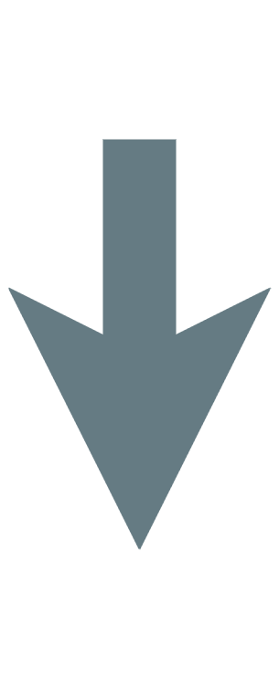

Dependency injection
in functional programming
Nikita Aleshchenko
Никита Алещенко | Haskell разработчик
n.aleshchenko@tinkoff.ru

Dantara
As software engeneers we want…
Dependency injection
Dependecy injection
Dependency Injection is a software design technique in which the creation and binding of dependencies are done outside of the dependent class.
Benefits of DI
- Testability
- Separation of concerns
Onion architecture
Three layers cake
| Layer № | Purpose |
|---|---|
| 3 | Business logic |
| 2 | DSL for Business logic |
| 1 | Interpreter |
Sample project
Translator bot
Получает сообщение от пользователя через long polling, переводит с английского на русский, отправляет сообщение обратно пользователю.
- Получение новых сообщений;
- Отправка сообщений;
- Перевод текста;
Gist
data Message = Msg
{ chatId :: Integer
, text :: Text
}
pullUpdates :: IO [Message]
pullUpdates = ...
sendMessage :: IO ()
sendMessage = ...
translate :: Text -> IO (Maybe Text)
translate = ...
proceed :: IO ()
proceed = pullUpdates
>>= traverse_ (translateMsg >>= sendMessage)
where
translateMsg :: Message -> IO Message
translateMsg (Msg ci t) = translate t
<&> (maybe
(Msg ci "Cannot translate text")
(Msg ci))
Problems
- Весь код в IO;
- Не тестируемый код;
Handle / Service pattern
Functional programming
- Functions
- Data
Key idea
data Handle = Handle
{ hPool :: Pool Postgres.Connection
, hCache :: IORef (PSQueue Int Text User)
, hLogger :: Logger.Handle -- Another handle!
, ...
}
Handle interface
data Handle = Handle
{ createUser :: Text -> IO User
, ...
}
createUser :: Handle -> Text -> IO User
createUser = ...
Our project
data Message = Msg
{ chatId :: Integer
, text :: Text
}
pullUpdates :: IO [Message]
pullUpdates = ...
sendMessage :: IO ()
sendMessage = ...
translate :: Text -> IO (Maybe Text)
translate = ...
proceed :: IO ()
proceed = pullUpdates
>>= traverse_ (translateMsg >>= sendMessage)
where
translateMsg :: Message -> IO Message
translateMsg (Msg ci t) = translate t
<&> (maybe
(Msg ci "Cannot translate text")
(Msg ci))
Our project
data Handle = Handle
{ pullUpdates :: IO [Message]
, sendMessage :: IO ()
, translate :: Text -> IO (Maybe Text)
}
proceed :: Handle -> IO ()
proceed h = pullUpdates h
>>= traverse_ (translateMsg >>= sendMessage h)
where
translateMsg :: Message -> m Message
translateMsg (Msg ci t) = translate h t
<&> (maybe
(Msg ci "Cannot translate text")
(Msg ci))
Parametrize monad
data Handle m = Handle
{ createUser :: Text -> m User
, getUserMail :: User -> m [Mail]
, ...
}
Our project
data Handle m = Handle
{ pullUpdates :: m [Message]
, sendMessage :: m ()
, translate :: Text -> m (Maybe Text)
}
proceed :: MonadIO m => Handle m -> m ()
proceed h = pullUpdates h
>>= traverse_ (translateMsg >>= sendMessage h)
where
translateMsg :: Message -> m Message
translateMsg (Msg ci t) = translate h t
<&> (maybe
(Msg ci "Cannot translate text")
(Msg ci))
Pros & Cons
Pros:
- Simple & intuitive
- Performant
- Local substituation of a handlers
Cons:
- Manual passing of handlers
- Tightly bound to execution monad
Tagless final
Key idea
From Handle data structure to Type classes!
data Handle m = Handle
{ pullUpdates :: m [Message]
, sendMessage :: m ()
, translate :: Text -> m (Maybe Text)
}

class Monad m => MonadMessenger m where
pullUpdates :: m [Message]
sendMessage :: m ()
class Monad m => MonadTranslator m where
translate :: Text -> m (Maybe Text)
Type families
class Monad m => MonadMessenger m where
type Message m :: *
pullUpdates :: m [Message]
sendMessage :: m ()
class Monad m => MonadTranslator m where
translate :: Text -> m (Maybe Text)
Our project
class Monad m => MonadMessenger m where
pullUpdates :: m [Message]
sendMessage :: m ()
class Monad m => MonadTranslator m where
translate :: Text -> m (Maybe Text)
proceed :: (MonadMessenger m, MonadTranslator m) => m ()
proceed h = pullUpdates
>>= traverse_ (translateMsg >>= sendMessage)
where
translateMsg :: (MonadTranslator m) => Message -> m Message
translateMsg (Msg ci t) = translate t
<&> (maybe
(Msg ci "Cannot translate text")
(Msg ci))
Free monads
Big Three
Functor
class Functor f where
fmap :: (a -> b) -> f a -> f b
Applicative
class Functor f => Applicative f where
pure :: a -> f a
(<*>) :: f (a -> b) -> f a -> f b
Monad
class Applicative m => Monad m where
return :: a -> m a
(>>=) :: m a -> (a -> m b) -> m b
Monad
class Applicative m => Monad m where
return :: a -> m a
(>>=) :: m a -> (a -> m b) -> m b
join :: (Monad m) => m (m a) -> m a
Monad
join :: (Monad m) => m (m a) -> m a
fmap :: (a -> b) -> f a -> f b
(>>=) :: m a -> (a -> m b) -> m b
(>>=) m f = join (fmap f m)
Key Idea
data Free f a
= Pure a
| Free (f (Free f a))
Key Idea
data Free f a
= Pure a
| Free (f (Free f a))
Pure :: a -> m a -- looks like pure
Free :: f (m a) -> m a -- looks like join
Functor instance
data Free f a
= Pure a
| Free (f (Free f a))
instance Functor f => Functor (Free f) where
fmap g (Free fx) = Free (fmap g <$> fx)
fmap g (Pure x) = Pure (g x)
Monad instance
data Free f a
= Pure a
| Free (f (Free f a))
instance Functor f => Monad (Free f) where
return = Pure
Pure x >>= g = g x
Free fx >>= g = Free ((>>= g) <$> fx)
Business logic functor
data BotF
= PullUpdates [Message]
| SendMessage Message
| Translate Text (Maybe Text)
Business logic functor
data BotF a
= PullUpdates [Message] a
| SendMessage Message a
| Translate Text (Maybe Text) a
Business logic functor
data BotF a
= PullUpdates ([Message] -> a)
| SendMessage Message a
| Translate Text ((Maybe Text) -> a)
Business logic functor
data BotF a
= PullUpdates ([Message] -> a)
| SendMessage Message a
| Translate Text ((Maybe Text) -> a)
deriving (Functor)
type Bot = Free BotF
Lift functor
liftF :: Functor f => f a -> Free f a
liftF command = Free (fmap Pure command)
Helper functions
data BotF a
= PullUpdates ([Message] -> a)
| SendMessage Message a
| Translate Text ((Maybe Text) -> a)
pullUpdates :: Bot [Message]
pullUpdates = liftF (PullUpdates id)
sendMessage :: Message -> Bot ()
sendMessage msg = liftF (SendMessage msg ())
translate :: Text -> Bot (Maybe Text)
translate t = liftF (Translate t id)
Business logic
proceed :: Bot ()
proceed h = pullUpdates
>>= traverse_ (translateMsg >>= sendMessage)
where
translateMsg :: Message -> Bot Message
translateMsg (Msg ci t) = translate t
<&> (maybe
(Msg ci "Cannot translate text")
(Msg ci))
Interpreter
botIO :: BotF a -> IO a
botIO (PullUpdates u) = ...
botIO (SendMessage m a) = ...
botIO (Translate t ft) = ...
Interpreter helpers
freeM :: (Functor f, Functor g)
=> (f a -> g a) -> Free f a -> Free g a
freeM phi (Pure x) = Pure x
freeM phi (Free fx) = Free $ phi (freeM phi <$> fx)
monad :: Monad m => Free m a -> m a
monad (Pure x) = pure x
monad (Free mfx) = do
fx <- mfx
monad fx
interp :: (Functor f, Monad m)
=> (f a -> m a) -> Free f a -> m a
interp phi = monad . freeM phi
Interpreter
botIO :: BotF a -> IO a
interp :: (Functor f, Monad m)
=> (f a -> m a) -> Free f a -> m a
interpBotIO :: Bot a -> IO a
interpBotIO = interp botIO
Freer monads
Free monad
data Free f a
= Pure a
| Free (f (Free f a))
data Free f a where
Pure :: a -> Free f a
Impure :: f (Free f a) -> Free f a
Simple trick
data Lan g a where
Lan :: g x -> (x -> a) -> Lan g a
instance Functor (Lan g) where
fmap f (Lan gx h) = Lan gx (f . h)
lan :: g a -> Lan g a
lan ga = Lan ga id
Substitution
data Free f a where
Pure :: a -> Free f a
Impure :: f (Free f a) -> Free f a
data Free (Lan g a) a where
Pure :: a -> Free (Lan g a) a
Impure :: (Lan (Free (Lan g a) a) a) -> Free (Lan g a) a
data FFree g a where
FPure :: a -> FFree g a
FImpure :: g x -> (x -> FFree g a) -> FFree g a